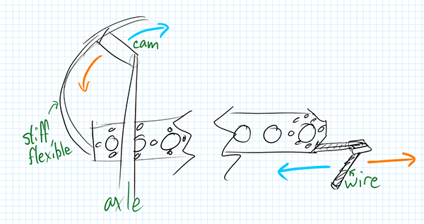

Currently Max and Tycho are working on a beater bar 3D part that is stiff enough to pull in blocks, and will hopefully double as a churro catcher when spinning. However, since the parts take 4 hours per set to print, and are harder to rapid-fire test and change and tweak relative to some other options we're going for other options till they're tested. The churro catchers help us to secure holding up the ramp but we are thinking of a similar design we can make with the parts we have.

For testing purposes, the stiff flexible part is a very large ziptie, and we're using steel wire as the hook. A motor rotates the axle, extending and
pulling back on the hook. The motor is driving the axle with chain and sprockets. The angle allows the wire to go over the churro initially and then
hook when pulled back. The angle is changing and we believe that as we develop the idea we will need a one way latch that flips over easily, as there
is some trouble with the initial push.